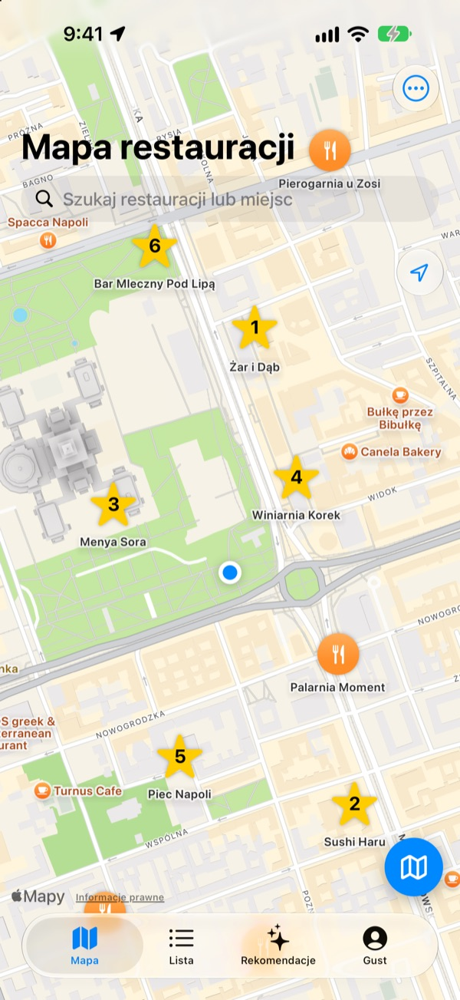
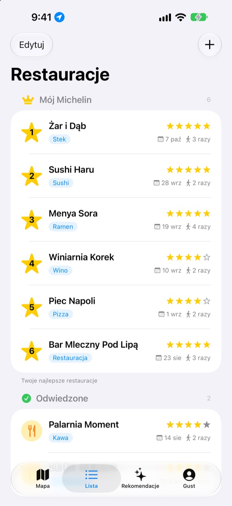
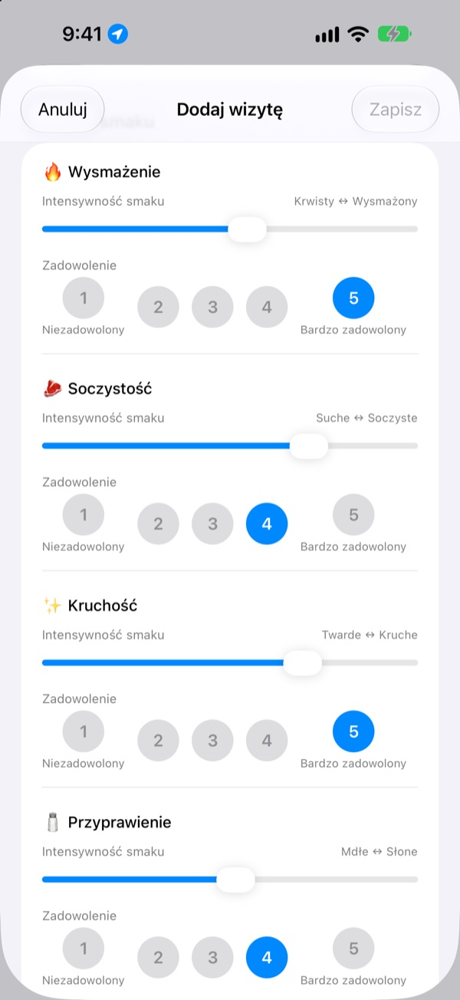
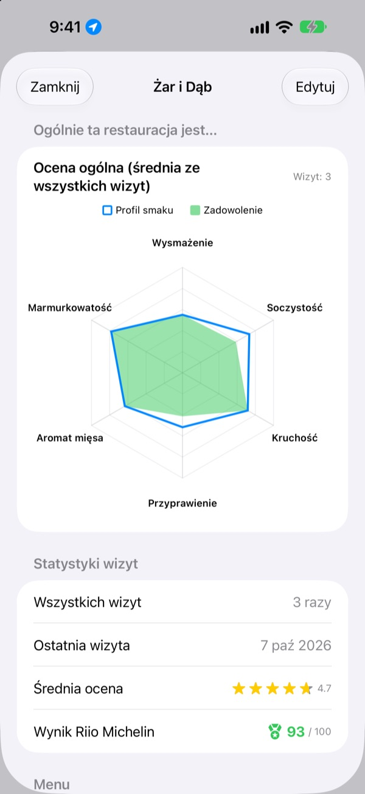

Miejsc, gdzie było pysznie,
już nie zapomnisz
Zaznacz na mapie restauracje, w których byłeś, i te, które chcesz odwiedzić, a przy każdej wizycie zapisz, co zamówiłeś, zdjęcia i smak. Gdy nie wiesz, gdzie zjeść, odpowiedź masz we własnych notatkach.
Wszystkie funkcje są bezpłatne. Bez rejestracji, wszystko zostaje na Twoim iPhonie.

Oceń danie
Wybierz rodzaj jedzenia i ustaw, jak intensywny był każdy smak i jak bardzo Ci smakował. Te same kryteria i te same obliczenia co przy wizycie w aplikacji.
Było pyszne, ale co ja wtedy zamówiłem?
Pamiętasz, że restauracja Ci się podobała, ale nazwa się zaciera, a co zamówiłeś albo czy rosół był za słony, nie pamiętasz wcale. Więc znów szukasz i czytasz opinie obcych ludzi. Insaeng zapisuje na mapie to, czego sam spróbowałeś, żeby kolejny wybór opierał się na Twoim doświadczeniu.
Odwiedzone, Chcę odwiedzić i Twój własny Michelin
Wyszukaj na mapie albo stuknij miejsce w pobliżu i od razu jest zapisane. Trzymaj osobno miejsca, w których byłeś, i te do spróbowania, a sześć ulubionych ułóż od 1 do 6.
Gdy ktoś zapyta o polecenie, po prostu pokaż listę.

Pytania dopasowane do dania
Intensywność smaku, np. ostrość czy słoność, ustawiasz suwakiem, a to, jak Ci smakowało, oceniasz osobno od 1 do 5. Przy steku liczy się wysmażenie i soczystość, przy sushi ryż i ryba, przy ramenie bulion i makaron.
Każda wizyta zapisuje też danie, zdjęcia, gwiazdki i notatki.

Dokąd warto wrócić, widać w liczbach
Po kilku wizytach każda restauracja pokazuje ocenę ogólną ze średniej wszystkich wizyt i Wynik Riio Michelin w skali do 100, który łączy gwiazdki i zadowolenie.
Gdy wychodzisz z zapisanej restauracji, chwilę później przychodzi przypomnienie, żeby zapisać wizytę.

Zacznij w trzech krokach
- 1
Zapisz restaurację
Wyszukaj ją na mapie albo stuknij miejsce w pobliżu.
- 2
Zapisz wizytę
Danie, zdjęcia, gwiazdki i smak. Ocena smaku jest opcjonalna.
- 3
Wybierz kolejną
Sprawdź top 6 i wyniki, a potem jedź z Mapami Apple, Kakao Map lub Naver Map.
Co oceniasz przy każdym rodzaju jedzenia
- 🍽️ Ogólne
- Ostrość, Wyrazistość, Słodycz, Słoność, Tłustość, Naturalny smak
- 🥩 Stek
- Wysmażenie, Soczystość, Kruchość, Przyprawienie, Aromat mięsa, Marmurkowatość
- 🍣 Sushi
- Shari (ryż), Neta (ryba), Wasabi, Balans, Formowanie, Temperatura
- 🍜 Ramen
- Bulion, Makaron, Chashu, Dodatki, Temperatura, Balans
- 🍕 Pizza
- Ciasto, Sos, Ser, Wysmażenie, Dodatki, Balans
- 🍷 Wino
- Ciało, Taniny, Kwasowość, Aromat, Finisz, Balans
- ☕ Kawa
- Kwasowość, Ciało, Smak, Posmak, Słodycz, Balans
Pozostałe dania oceniasz według ogólnych kryteriów z pierwszego wiersza. Możesz też tworzyć własne kategorie.
Częste pytania
Jak dodać restaurację?
Wpisz nazwę restauracji w polu wyszukiwania u góry mapy i w wynikach stuknij „Dodaj do moich restauracji”. Możesz też stuknąć miejsce w pobliżu widoczne na mapie i od razu je dodać. Lokal, którego nie ma w wynikach wyszukiwania, dodasz ręcznie w miejscu, w którym jesteś, lub w punkcie wybranym na mapie.
Czym są „Odwiedzone”, „Do odwiedzenia” i Top 6?
Odwiedzone: restauracje, w których już byłeś. Możesz zapisywać w nich wizyty. Do odwiedzenia: restauracje, które chcesz kiedyś wypróbować. Po wizycie zmień status na „Odwiedzone” w szczegółach restauracji. Top 6 (moje Michelin): ranking sześciu restauracji, które cenisz najbardziej, od 1. do 6. miejsca. Miejsc z listy „Do odwiedzenia” nie można dodać do Top 6.
Czy ocena smaku jest obowiązkowa?
Nie, to opcjonalne. Jeśli ocenisz, intensywność smaku i zadowolenie trafią do oceny ogólnej restauracji i liczą się do Wyniku Riio Michelin.
Kiedy pojawia się powiadomienie „Jak było dzisiaj?”
Jeśli spędzisz ponad 5 minut w pobliżu zapisanej restauracji i potem odejdziesz, powiadomienie pojawi się po około 40 minutach. Ta funkcja wymaga dostępu do lokalizacji „Zawsze” i zgody na powiadomienia. Jeśli nie chcesz tych powiadomień, wyłącz je w Ustawienia > Aplikacje > Insaeng albo zmień dostęp do lokalizacji na „Podczas używania aplikacji”. Lokalizacja jest sprawdzana wyłącznie na urządzeniu. Trasy nie są zapisywane ani nigdzie wysyłane.
Czy mogę korzystać z aplikacji bez dostępu do lokalizacji?
Tak. Restauracje możesz dodawać i opisywać, wybierając ich położenie bezpośrednio na mapie. Niedostępne będą tylko wyświetlanie bieżącej lokalizacji i przypomnienia po wizycie.
Wyszukiwanie miejsc nic nie zwraca
Wyszukiwanie miejsc wymaga połączenia z internetem. Spróbuj innej nazwy lub krótszego słowa kluczowego. Jeśli nadal nic nie ma, wybierz miejsce na mapie i dodaj restaurację ręcznie.
Gdzie są zapisywane moje wpisy? Czy synchronizują się z innymi urządzeniami?
Restauracje, dziennik wizyt i zdjęcia są przechowywane wyłącznie na tym iPhonie. Obecna wersja nie obsługuje synchronizacji z innymi urządzeniami, a kopia zapasowa i przywracanie z iCloud w ustawieniach jeszcze nie działają. Dane aplikacji trafiają natomiast do pełnej kopii zapasowej iPhone’a (w iCloud lub na komputerze).
Chcę usunąć wszystkie wpisy
W ustawieniach na ekranie mapy stuknij „Usuń wszystkie dane”, aby usunąć restauracje i dziennik wizyt. Tej operacji nie można cofnąć. Aby usunąć również wszystkie zdjęcia, usuń aplikację.
Czy po usunięciu i ponownej instalacji aplikacji moje wpisy zostaną?
Nie. Wpisy są przechowywane tylko na urządzeniu, więc znikają razem z aplikacją. Zastanów się dobrze, zanim ją usuniesz.
Czy naprawdę wszystko jest za darmo?
Tak. Wszystkie funkcje są bezpłatne, bez reklam i bez konta. „Wesprzyj twórcę” w ustawieniach jest całkowicie dobrowolne i niczego nie odblokowuje.
Jeśli nie znalazłeś tu odpowiedzi, napisz do nas bezpośrednio z aplikacji w Ustawienia > Pomoc albo wyślij e-mail na mizzking75@gmail.com. Podaj wersję aplikacji, model iPhone’a oraz to, na jakim ekranie i co robiłeś, a szybciej zajmiemy się sprawą.